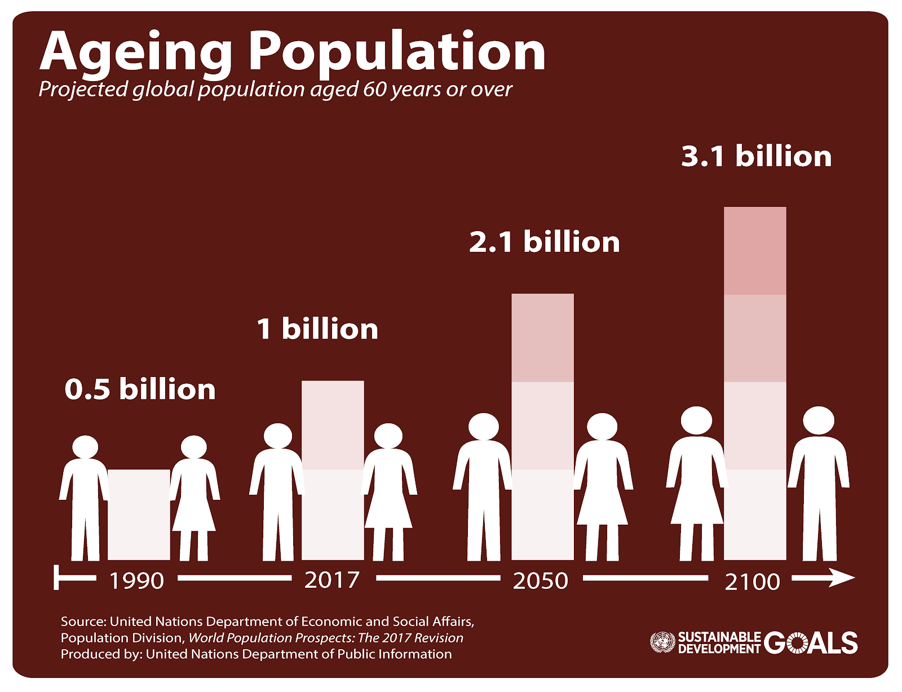
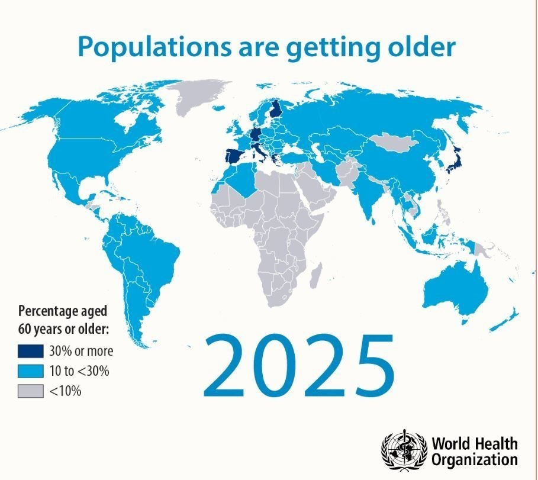
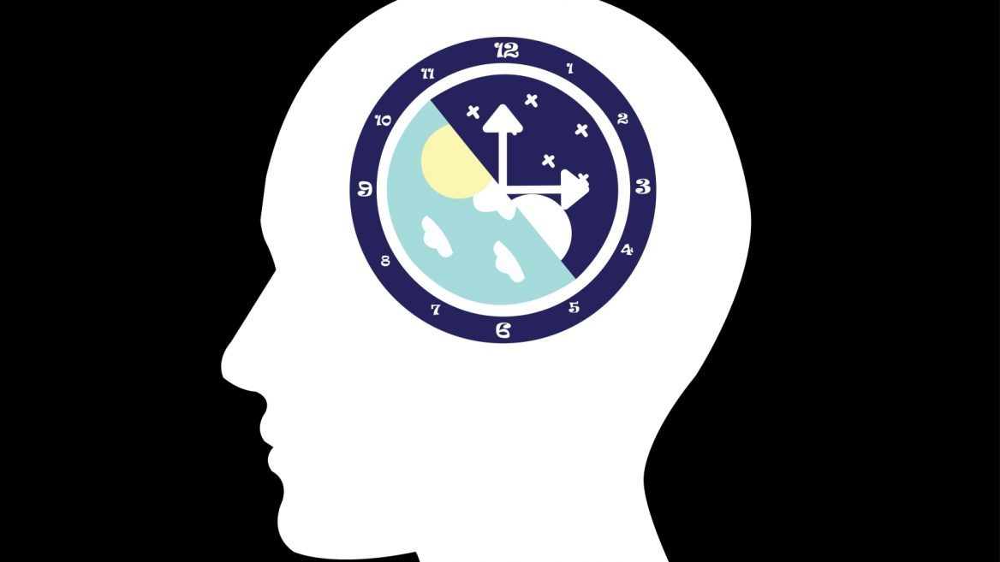
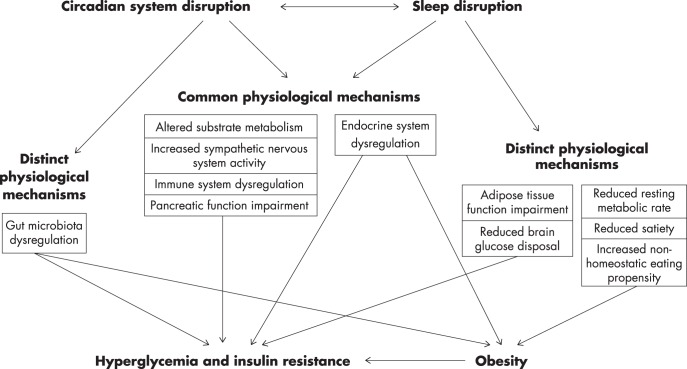
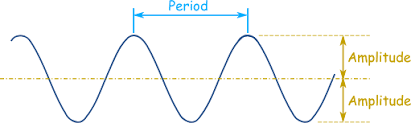
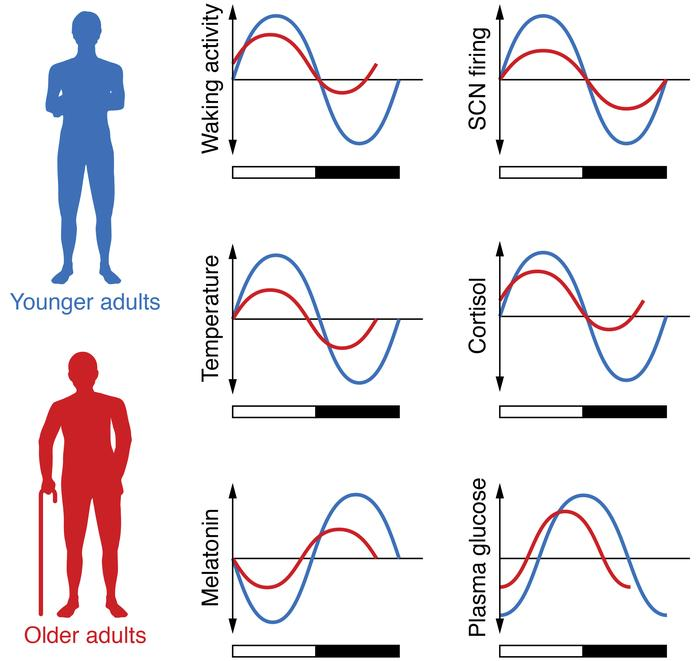

Aging and Circadian Rhythm
Audrey Jiang
Last updated on 2019-12-24
Aging
1. The Growing Aging Group
Aging has become one of the most pressing while neglectful problems worldwide. As the data from World Health Organization (WHO) suggests, between 2015 and 2050, the proportion of the world’s population over 60 years will nearly double from 12% to 22%, and by 2020, the number of people aged 60 years and older will outnumber children younger than 5 years. This population structure change will cause challenges to the societal and health systems, especially in developing countries. 1
 2
2. The Aging Problem Worldwide
Although the shift in distribution of a country’s population towards older ages started in developed countries (for example in Japan 30% of the population are already over 60 years old), more and more low- and middle-income countries are experiencing the similar challenges, 3 and the effect of aging on these countries will be much more severe than the developed countries, as most of them haven’t established a well-founded medical care system.
The figure below pictures the estimated percentage of people aged 60 years or older by the year 2025 with gradience of different percentage ranges. As the figure suggests, most places in the world will have a ages population of more than 10%.
 4
3. Aging and Health
There are many conditions that elder people would develop as they age, including hearing loss, cataracts and refractive errors, back and neck pain and osteoarthritis, chronic obstructive pulmonary disease, diabetes, depression, and dementia. Furthermore, as people age, they are more likely to experience several conditions at the same time. 5
The factors that influcing people are multi-layered as suggested by the following figure, it is not only shaped by the factors of the environment they live in, such as the housing, assistive technologies, transportation system, social facilities, but also individual factors like people’s behaviors including different aspects of their lifestyle, age-related changes, genetics, and disease.

While most of the current researches relating to aging focus on different diseases including physiological ones like cancer and neurodegenerative diseases such as Parkinson or Alzheimer, the role of everyday lifestyle is overlooked. Particularly, circadian rhythm plays an important role in almost every perspectives of human health. In the next section, we will go through what a circadian rhythm is and how it affect our daily life performance, and in the last section, we will look at how circadian rhythm changes with aging, and how a rhythmatic everyday schedule will help with human health.
Circadian Rhythm
1. What is Circadian Rhythm?
(the most basic)
Circadian rhythm is the 24-hour natural and internal clock that regulates sleep-wake cycles as well as metabolism and other functionalities of living beings. These 24-hour rhythms have been widely observed in plants, animals, fungi and cyanobacteria7.
Although circadian rhythms are endogenous and self-sustained, they are adjusted (entrained) to the local environment by external cues called zeitgebers (German, “time-giver”). The known zeitgebers include light, temperature, food availability and presence of predators 8. The ability to entrain to a new rhythm is one of the criteria to be determined as circadian rhythm.
 9
2. Three Criteria
- There are three criteria that are used to determine if the biological rhythm is circadian or not:
- The rhythm has an endogenous free-running period that lasts approximately 24 hours.
- The rhythms are entrainable.
- The rhythms exhibit temperature compensation.
4. Health Consequences of Circadian Disruption
Circadian system disruption and sleep disruption will affect human being’s health in various ways as shown by the figure below. One of the best-characterized metabolic sequelae of sleep disruption is disrupted glucose metabolism, and its negative influence on human body is universal across different regulatory systems 12.
Sleep-restriction studies also showed that sleep restriction will increase energy intakes in adults, contributing to obesogenic effect, as more food will be need to be consumed to compensate for the additional energy cost during the wake period 13.
 14
Aging’s effect on circadian rhythm
Previous researches in the field have shown that aging can affect the circadian rhythms both in animal models and humans in various scenarios, including decreased circadian amplitude and fragmentation of the sleep episodes. 15 16
Amplitude and period are regarded as two important indicators of the circadian cycle, aging usually results in the damping of the amplitude and the shortening of the period. As shown below, amplitude is defined as the distance between the origin and the crest (or the trough). In circadian rhythm research, it can be evaluated by the locomotor activity level, or the bioluminescence level, or the multiunit neural recordings from the central circadian clock in the suprachiasmatic nucleus (SCN). The period is defined as the amount of time it takes for one complete circadian cycle, typically it is 24 hours for human beings.
 17
Animal Models
Aging’s effect on amplitude
Nakamura et al. (2011) 18 has shown the significant reduction of amplitude of day-night difference in multiunit neural activity (MUA) from the suprachiasmatic nucleus (SCN) in “middle-aged” mice compared to young mice.
Aging’s effect on period
Morin (1988) 19 had used hamster models to investigate the age-related changes in circadian period, entrainment and rhythm splitting, and they found that although there’s no differences in terms of entrainment in young and old hamster groups, the loss of entrainment to longer T-cycles was more drastic for the older group. They also confirmed the observation by Pittendrigh and Dann (1974) 20, that the elder the hamster, the shorter the circadian period becomes.
Humans
The figure below documented the changes in the 24-hour cycle of between young and old adults, including rhythms of waking activity; core body temperatures; SCN firing; release of hormones, such as melatonin and cortisol; and fasting plasma glucose levels. Relative to younger adults (blue lines), the amplitude of many rhythms dampens in older adults (red lines). In some cases, the peak of the rhythm also advances. 21 
“Aging and Health”. World Health Organization, 5th Feb. 2018, https://www.who.int/news-room/fact-sheets/detail/Aging-and-health. Accessed 28th Nov. 2019↩
Dossman, Christopher. “The State of Elderly Care Products and How AI Can Revolutionize Aging”. Medium, 29th Oct. 2018, https://towardsdatascience.com/the-state-of-elderly-care-products-and-how-ai-can-revolutionize-aging-d4b098a1dacd. Accessed 28th Nov. 2019↩
“Aging and Health”. World Health Organization, 5th Feb. 2018, https://www.who.int/news-room/fact-sheets/detail/Aging-and-health. Accessed 28th Nov. 2019↩
“An Aging Population is Stalling Productivity”. The Longevity Reporter, 17th Dec. 2016, http://longevityreporter.org/blog/2016/12/16/an-aging-population-is-stalling-productivity. Accessed 28th Nov. 2019↩
“Aging and Health”. World Health Organization, 5th Feb. 2018, https://www.who.int/news-room/fact-sheets/detail/Aging-and-health. Accessed 28th Nov. 2019↩
World Health Organization on Twitter, 18th Jan. 2017, https://twitter.com/who/status/821761804271579137. Accessed 28th Nov. 2019↩
“Circadian Rhythm”. Wikipedia, https://en.wikipedia.org/wiki/Circadian_rhythm#Criteria. Accessed 28th Nov. 2019↩
“Circadian Rhythm”. Wikipedia, https://en.wikipedia.org/wiki/Circadian_rhythm#Criteria. Accessed 28th Nov. 2019↩
Illustration by Kanyanat Wongsa/Shutterstock.com https://www.israel21c.org/10-things-you-didnt-know-about-how-circadian-rhythm-affects-your-health/. Accessed 28th Nov. 2019.↩
Wittmann, M., Dinich, J., Merrow, M., & Roenneberg, T. (2006). Social jetlag: Misalignment of biological and social time. Chronobiology International, 23, 497–509. https://doi. org/10.1080/07420520500545979.↩
Vetter, A. (2018). Circadian disruption: What do we actually mean? European Journal of Neuroscience, 2018; 00: 1– 20. https://doi.org/10.1111/ejn.14255.↩
Potter, G.D.M et al.(2016) Circadian Rhythm and Sleep Disruption: Causes, Metabolic Consequences, and Countermeasures. Endocr Rev. 37(6): 584-608. doi: 10.1210/er.2016-1083.↩
Capers, P.L. et. al (2015) A systematic review and meta-analysis of randomized controlled trials of the impact of sleep duration on adiposity and components of energy balance. Obes Rev. 16(9):771-82.↩
Potter, G.D.M et. al (2016) Circadian Rhythm and Sleep Disruption: Causes, Metabolic Consequences, and Countermeasures. Endocr Rev. 37(6): 584-608. doi: 10.1210/er.2016-1083.↩
Nakamura TJ, et al. (2011) Age-related decline in circadian output. J. Neursci. 31(28): 10201-10205.↩
Van Someren EJ (2000) Circadian rhythms and sleep in human aging. Chronobio. Int. 17:233–243.↩
Pierce, Rod. “Amplitude, Period, Phase Shift and Frequency” Math Is Fun. Ed. Rod Pierce. 13 Feb 2019. 24 Dec 2019 http://www.mathsisfun.com/algebra/amplitude-period-frequency-phase-shift.html↩
Nakamura TJ, Nakamura W, Yamazaki S, Kudo T, Cutler T, Colwell CS, Block GD (2011) Age-related decline in circadian output. Journal of Neuroscience 31(28): 10201-10205.↩
Morin LP (1988) Age-related changes in hamster circadian period, entrainment, and rhythm splitting. Journal of Biological Rhythms 3(3): 237-248.↩
Pittendrigh CS & Daan S (1974) Circadian oscillations in rodents: a systematic increase of their frequency with age. Science 186: 548-550.↩
Hood S & Amir S (2017) The aging clock: circadian rhythms and later life. Journal of Clinical Investigation 127(2): 437-446.↩
Hood S & Amir S (2017) The aging clock: circadian rhythms and later life. Journal of Clinical Investigation 127(2): 437-446.↩